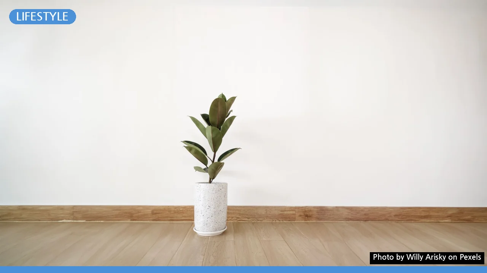
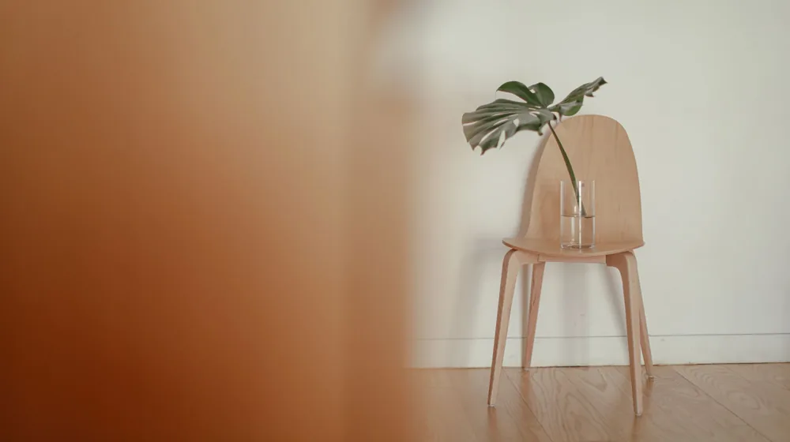

미니멀리즘, 후회 없이 비우려면? 시작 전 꼭 알아야 할 5가지
사진: Willy Arisky / Pexels (무료 이미지, 출처 표기)
미니멀리즘, 무작정 버리기 전 이것부터 확인하세요

미니멀리즘을 시작하려는 당신, 무작정 물건을 버리다가 후회할까 봐 망설여지시나요? 단순히 물건을 줄이는 것을 넘어, 삶의 질을 높이고 만족감을 얻기 위해서는 몇 가지 주의할 점이 있습니다. 이 글에서는 많은 사람이 실수하는 지점들을 짚어보고, 후회 없이 미니멀 라이프를 시작하고 지속하는 데 필요한 실질적인 조언을 드립니다.
미니멀리즘은 단순히 버리는 행위를 넘어, 나에게 꼭 필요한 것이 무엇인지 알아가는 과정입니다. 충동적으로 물건을 정리하기보다는, 내가 추구하는 삶의 가치와 라이프스타일에 대해 먼저 고민해볼 필요가 있습니다.
사용 빈도가 낮다는 이유만으로 버리기보다는, 해당 물건이 내게 주는 의미나 대체 불가능한 기능이 있는지 심사숙고해야 합니다. '언젠가 쓸모 있을 거야'라는 막연한 생각과 '지금은 필요 없지만 중요한 물건'을 구분하는 것이 중요합니다.
필요한 것까지 버리는 '극단적 미니멀리즘' 경계하기
일부 미니멀리즘 콘텐츠를 보면 최소한의 물건만 남기는 극단적인 모습에 압도될 수 있습니다. 그러나 이는 자신의 생활 패턴이나 가족 구성원의 특성을 고려하지 않아 오히려 불편함과 재구매 비용을 초래할 수 있습니다.
예를 들어, 자주 사용하는 공구나 특정 취미 용품을 버렸다가 다시 구매해야 하는 상황이 생길 수 있습니다. 미니멀리즘은 불편함을 감수하는 것이 아니라, 불필요한 것을 덜어내어 더 편리하고 풍요로운 삶을 만드는 것을 목표로 합니다.
미니멀리즘, 과정보다 '목표'에 집중해야 하는 이유
미니멀리즘은 특정 물건의 개수를 맞추거나 남들에게 보여주기 위한 경쟁이 아닙니다. 비움의 과정 자체에 집중하기보다, 왜 미니멀 라이프를 시작하려 했는지 근본적인 목표를 잊지 않는 것이 중요합니다.
삶의 여유, 소비 습관 개선, 환경 보호, 새로운 취미 공간 확보 등 자신만의 목표를 명확히 세우세요. 목표가 뚜렷하면 비움의 과정에서 흔들리지 않고 지속 가능한 미니멀 라이프를 만들어갈 수 있습니다.
중고 판매/기부는 현명한 비움의 필수 과정
불필요해진 물건을 무조건 쓰레기통에 버리는 것은 자원 낭비이자 환경에도 좋지 않습니다. 물건에 새로운 가치를 부여하고 자원 순환에 기여하는 중고 판매나 기부를 적극적으로 고려해야 합니다.
2026년 10월 현재, 당근마켓이나 중고나라 같은 플랫폼을 통해 개인 간 거래가 활발하며, 아름다운가게 등 기부 단체를 활용하면 연말정산 시 기부금 영수증 혜택도 받을 수 있습니다. 가전제품 등 특정 물품은 지자체 재활용 센터를 이용하는 것이 좋습니다.
버릴 물건 현명하게 처리하는 방법:
- 상태 좋은 의류 및 잡화: 아름다운가게, 굿윌스토어 등 기부
- 소형 가전 및 전자제품: 주민센터나 대형마트 내 수거함, 소형 폐가전 무상 방문수거 서비스 (콜센터 1599-0903)
- 가구 및 대형 폐기물: 지자체 대형 폐기물 스티커 구매 후 배출
- 미개봉 새 제품/사용감 적은 물품: 중고 거래 플랫폼 (당근마켓, 중고나라 등) 판매
- 책: 헌책방, 온라인 중고서점 판매 또는 기부
정확한 처리 방법과 수거 기준은 거주 지역의 지자체 홈페이지나 관련 기관에서 다시 확인하시길 권장합니다.
'가족 미니멀리즘' 갈등 없이 함께 실천하는 법
혼자 사는 가구가 아니라면, 미니멀리즘은 가족 구성원 모두의 동의와 협조가 필요합니다. 강요는 오히려 반발심을 불러일으키고 관계에 불화를 만들 수 있으므로 주의해야 합니다.
각자의 개인 물품은 본인이 결정하도록 존중하고, 공유 공간(거실, 주방 등)의 물건은 함께 논의하여 정리하는 것이 좋습니다. 가족 회의를 통해 미니멀리즘의 장점을 공유하고, 모두가 만족할 수 있는 합의점을 찾아가는 과정이 중요합니다.
무엇보다 중요한 것은 서로의 취향과 필요를 인정하고, 점진적으로 변화를 시도하는 것입니다. 갑작스러운 변화보다는 작은 부분부터 함께 정리하며 성취감을 느끼는 것이 성공적인 가족 미니멀리즘의 비결입니다.
미니멀리즘은 단순히 물건을 줄이는 기술이 아니라, 삶을 더욱 풍요롭게 만드는 지혜로운 과정입니다. 무작정 버리기보다 나만의 기준과 목표를 세우고, 불필요한 소비를 줄이며, 환경까지 생각하는 현명한 비움의 태도를 실천해보세요. 이 조언들이 당신의 미니멀 라이프 여정에 도움이 되기를 바랍니다.
🔗 이 글도 함께 보면 좋아요: 캐리어 구매 전 꼭 확인! 당신의 여행을 망치지 않을 5가지 선택 기준